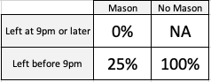

For Mom
A blog written primarily for my mother so she can see and hear about the cool things I'm learning,
without any the confusing data science jargin.
Exploring Utah County Housing Data
Alright, Mom, this is one of the cooler parts about working with data.
We’re gonna try some different ways to visualize our data to hopefully gain some insight into how Amy
and I should approach the housing market when we buy.
Some more specific questions we will look to answer are these:
- What regions in Utah County are generally more expensive to live in?
- Are town houses a popular option in Utah County?
- How does the house type affect its price?
- What does the price distribution look like for all housing?
- Can we predict a house price based on some of its features?
Lets hop in.
As we look ahead, we’ll probably have to revisit this analysis in the future to reassess our options and make well-informed decisions in a housing market that is always changing. Here's to staying adaptable and making wise choices in the face of the housing market's fluctuations!
Some more specific questions we will look to answer are these:
- What regions in Utah County are generally more expensive to live in?
- Are town houses a popular option in Utah County?
- How does the house type affect its price?
- What does the price distribution look like for all housing?
- Can we predict a house price based on some of its features?
Lets hop in.
What Regions in Utah County are generally more expensive to live in?
Instead of averaging the house prices of each city and comparing, we’re gonna use a map for this one. This might help us see some spatial trends that we wouldn’t see in other charts.import pandas as pd
import plotly.express as px
import xgboost as xgb
from sklearn.model_selection import train_test_split
from sklearn.model_selection import GridSearchCV
from sklearn.metrics import make_scorer
import numpy as np
df = pd.read_csv('zillow.csv')
fig = px.scatter_mapbox(
df,
lat='latitude',
lon='longitude',
size = 'price',
color = 'homeType'
)
fig.update_layout(mapbox_style="carto-positron")
fig.show()df_avg_price_per_city = df.groupby('city').median(numeric_only = True).reset_index().sort_values('price', ascending = False)
fig = px.bar(df_avg_price_per_city, x = 'city', y = 'price')
fig.show()Are town houses a popular option in Utah County?
For this one, we will simply make a pie chart. Fun fact – Though pie charts can be a pretty way to visualize data, there are often more practical and useful ways to visualize your data, especially if you have more than two or three groups.df_homeType = df.value_counts('homeType').reset_index().rename(columns = {0: 'Count'})
fig = px.pie(
df_homeType,
names='homeType',
values='Count'
)
fig.show()How does house type affect its price?
We’re gonna make a scatter plot here, so we can visualize the price of a home depending on the square footage. This might help make our comparison more even. We’ll even throw in a regression line for each house type.fig = px.scatter(df[df['homeType'].isin(['SINGLE_FAMILY', 'TOWNHOUSE', 'CONDO'])],
'livingArea',
'price',
color = 'homeType',
trendline= 'lowess')
fig.update_xaxes(range = [0, 4000])
fig.update_yaxes(range = [0, 1000000])
fig.update_traces(
line=dict(width=3),
selector=dict(type='scatter', mode='lines')
)
fig.show()What does the price distribution look like for all housing?
Being a Statistics major, I like talking about distributions. We’re gonna make a histogram that shows us the distribution of house prices in Utah County.fig = px.histogram(df[df['price'] < 2000000], x = 'price')
fig.show()Can we predict a house price based on some of its features?
This part is going to involve a bit of machine learning. Basically, we are going to show a mathematical algorithm what a bunch of house listings look like, and then we will check to see if it can pick up on any patterns that will allow it to predict the price of other houses in Utah County. I can’t explain in detail how it works here, but I will provide the code for people interested.# Prepare the data frame for a Boosted Tree Model
one_hot_encoded1 = pd.get_dummies(df['homeType'])
one_hot_encoded1.drop(columns = ['SINGLE_FAMILY'], inplace = True)
one_hot_encoded = pd.get_dummies(df['city'])
one_hot_encoded.drop(columns = ['Saratoga Springs'], inplace = True)
df_prepared = pd.concat([df, one_hot_encoded1], axis=1)
df_prepared = pd.concat([df_prepared, one_hot_encoded], axis=1)
df_prepared = df_prepared.drop(columns = ['city',
'homeType',
'priceReduction',
'zipcode',
'latitude',
'longitude',
'30_year_mortgage',
'daysOnZillow'])
df_prepared = df_prepared[-df_prepared['livingArea'].isna()]
df_prepared = df_prepared[df_prepared['price'] < 1500000]
# Split the data and tune hyperparameters
X_train, X_test, y_train, y_test = train_test_split(df_prepared.drop(columns = ['price']), df_prepared['price'], test_size=0.2, random_state=42)
xgb_model = xgb.XGBRegressor()
param_grid = {
'max_depth': [3, 5, 7],
'learning_rate': [0.01, 0.1, 0.2],
'n_estimators': [50, 100, 200]
}
def MAPE(y_true, y_pred):
absolute_percentage_error = np.abs((y_true - y_pred) / y_true)
weight = 1 + np.exp(-np.abs(y_true))
weighted_error = absolute_percentage_error * weight
return np.mean(weighted_error)
mape_score = make_scorer(MAPE, greater_is_better=False)
grid_search = GridSearchCV(xgb_model, param_grid, scoring = mape_score, cv = 5)
grid_result = grid_search.fit(X_train, y_train)
# Set best hyperparameters to the model
best_model = grid_result.best_estimator_
# Make predictions on the test set
y_pred = best_model.predict(X_test)
predictions = pd.DataFrame({'Actual': y_test,
'Prediction': y_pred}).astype(int)
# Plot the Figure
fig = px.line(predictions, x = 'Prediction', y = 'Prediction')
fig.add_scatter(x=predictions['Prediction'], y=predictions['Actual'], mode='markers')
fig.update_layout(
yaxis_title_text='Actual',
showlegend=False
)
fig.show()Primary Takeaways
After this analysis, it’s easy to rule out some possibilities for our first property like living in Alpine or having lots of living space. On the bright side though, we know that looking into town homes might be a good way to maximize space on a budget. And lucky for us, there are plenty of them on the market!As we look ahead, we’ll probably have to revisit this analysis in the future to reassess our options and make well-informed decisions in a housing market that is always changing. Here's to staying adaptable and making wise choices in the face of the housing market's fluctuations!
Digging for Utah County Housing Data (Python & API’s)
Well Mom, school isn't going to last forever, and Amy and I are going to have to move out of our 100-year-old
basement apartment sometime. The pandemic wasn't very nice to home prices, and it was even meaner to mortgage
rates. Affording a home in 2023 looks impossible unless you have half a million dollars sitting around. Considering
this, I want to know what the housing market looks like now: almost 3 years after the commencement of the pandemic.
In this blog post, we’ll focus on getting hands on and cleaning data that would answer that question.
Remember the last time we ate at Texas Roadhouse, and you ordered a chicken entrée that the waiter brought you a few minutes later? You weren’t thinking about how the meal was made. You just told the waiter what you wanted, and they brought it to you. Like a waiter, an API is like a middleman that we tell what we want. APIs allow us to interact data that might be complicated to retrieve otherwise.
Here's some code below that I wrote to tell the Zillow API that I want data for 20 pages of listings in the Utah County area. If you’re comfortable with Python, keep reading. Mom, you can skip to the part that says, “Scraping an Interest Rate.”
We start by saving our API URL to an object, and then saving our API key to another object. The documentation for the API told us what headers we needed to make a successful request, so we saved those to a dictionary called ‘headers’.
We start a for loop so that we can iterate through each page of data on the API. The API documentation also told us how to query the information that we are interested in, so we specified the location, the way we want the data to be sorted, and the page number to another dictionary called ‘querystring’
At this point, we’re ready to make the request using the requests.get() function. We pull the data off of the response with .json() and then normalize it to a pandas data frame.
Because the API documentation indicates that requests will be denied if we make more than one request per second, we include in our for loop the time.sleep function to pause our code for 2 seconds before continuing to run.
By the end of it, we concatenate each data frame from our for loop into one grand data frame with 20 pages of listings!
Mom, all you need to know is that I wrote code that takes control of my internet browser and navigates to a website that displays the current rate. Go ahead and skip to the section called “Cleaning the Data.” Python people, feel free to see what my code looks like.
Mom, you can go ahead and skip again to “Ethical Considerations”. Everyone else, here we go.
Well, that’s it! We’ve got our data! We’ll spend another blog post looking into the data to see what cool things we can find. Chao.
September 2023
Collecting The Data
After looking through the internet on how we could get the most up to date data on house listings, I found a place that would give us current data on house listings from Zillow. This data, however, isn’t just a table we download from the internet, but it actually comes from what’s called an API.Remember the last time we ate at Texas Roadhouse, and you ordered a chicken entrée that the waiter brought you a few minutes later? You weren’t thinking about how the meal was made. You just told the waiter what you wanted, and they brought it to you. Like a waiter, an API is like a middleman that we tell what we want. APIs allow us to interact data that might be complicated to retrieve otherwise.
Here's some code below that I wrote to tell the Zillow API that I want data for 20 pages of listings in the Utah County area. If you’re comfortable with Python, keep reading. Mom, you can skip to the part that says, “Scraping an Interest Rate.”
import requests
import pandas as pd
import time
url = "https://zillow56.p.rapidapi.com/search"
with open('api.txt', 'r') as file:
api_key = file.read()
headers = {
"X-RapidAPI-Key": api_key,
"X-RapidAPI-Host": "zillow56.p.rapidapi.com"
}
lst_1 = []
for page in range(1, 21):
querystring = {"location":"Utah County, UT",
"sortSelection":"days",
"page":f"{page}"}
response = requests.get(url, headers=headers, params=querystring)
data = response.json()
df__ = pd.json_normalize(data['results'])
lst_1.append(df__)
time.sleep(2)
df.orig = pd.concat(lst_1)We start by saving our API URL to an object, and then saving our API key to another object. The documentation for the API told us what headers we needed to make a successful request, so we saved those to a dictionary called ‘headers’.
We start a for loop so that we can iterate through each page of data on the API. The API documentation also told us how to query the information that we are interested in, so we specified the location, the way we want the data to be sorted, and the page number to another dictionary called ‘querystring’
At this point, we’re ready to make the request using the requests.get() function. We pull the data off of the response with .json() and then normalize it to a pandas data frame.
Because the API documentation indicates that requests will be denied if we make more than one request per second, we include in our for loop the time.sleep function to pause our code for 2 seconds before continuing to run.
By the end of it, we concatenate each data frame from our for loop into one grand data frame with 20 pages of listings!
Scraping an Interest Rate
Amy and I probably won’t be able to afford a home without a mortgage payment, so we’re interested to know what most people’s mortgage rates are right now. Instead of looking up the current average rate every time we refresh this data, we will automate the whole process!Mom, all you need to know is that I wrote code that takes control of my internet browser and navigates to a website that displays the current rate. Go ahead and skip to the section called “Cleaning the Data.” Python people, feel free to see what my code looks like.
from selenium import webdriver
from selenium.webdriver.chrome.service import Service as ChromeService
from webdriver_manager.chrome import ChromeDriverManager
from selenium.webdriver.common.by import By
url = 'https://www.usbank.com/home-loans/mortgage/mortgage-rates/utah.html'
driver = webdriver.Chrome(service=ChromeService(ChromeDriverManager().install()))
driver.get(url)
element = driver.find_elements(By.XPATH, '/html/body/div[2]/div/div/div/div[4]/div/div[3]/section/div/div/div/div/div/div/section/div/div/div/div/div/div[1]/div[2]/span[1]')
todays_30_year_rate = element[0].textCleaning the Data
Now that we’ve got our data, we’ve got to clean it. Maybe that entrée from Texas Roadhouse you ordered had some olives on it, ew. You’re not gonna eat those, are you? You’re gonna take them off and push them to the side of the plate so you can eat all the good stuff. We need to do the same thing with our data. There is a lot of good information about each house like how much it costs, or how many bathrooms are in it, but there is also a lot of information that we’re not interested in like whether the listing is sponsored or not on Zillow.Mom, you can go ahead and skip again to “Ethical Considerations”. Everyone else, here we go.
df = df_orig[['price',
'bathrooms',
'bedrooms',
'city',
'homeType',
'livingArea',
'zipcode',
'priceReduction',
'daysOnZillow',
'latitude',
'longitude']]
df = df[~df['homeType'].isin(['LOT', 'MANUFACTURED', 'MULTI_FAMILY'])]Ethical Considerations
Just because you can find information online doesn’t mean that it’s free to use. Because web scraping hasn’t been around for super long, policy and ethics are still being developed, so the line between appropriate and inappropriate use of online data is somewhat blurry. Luckily for us, we are using an API with a subscription, and we’re scraping one very public number from another website, so we’re safe to assume that we aren’t stepping on anyone’s toes.Well, that’s it! We’ve got our data! We’ll spend another blog post looking into the data to see what cool things we can find. Chao.
The Data Science Process: What do Data Scientists even do?
What would you do differently if you knew whether your teenager would come home on time before they even left,
or if you knew that your child was on track to be the leader of the Downtown Salt Lake City Mafia by age 30?
As a mom with this kind of information, you could sure make a heck of a difference, and probably spare yourself
a lot of grief and stress in the long run. Businesses have a similar mindset about the welfare of their finances,
and they’re willing to pay big bucks if someone can rub a crystal ball and show them the future if it will help their business thrive.
Although I think ‘wizard’ is a more appropriate title for people who actually do this for businesses, the world has chosen the term ‘Data Scientist.’ Data Scientists are responsible for helping businesses grow and improve, but nobody really knows how they do that, except that they probably use data along the way. Today I hope to explain what Data Scientists do by comparing it to how our brains help us make decisions.
Data Scientists encounter unpredictable problems, each presenting unique challenges. Despite the variability, the approach to solving these issues parallels the way we make everyday decisions. We can break this process down into the following steps:
Identifying the Problem
Collecting the Data
Cleaning the Data
Exploring the Data
Modeling the Data
Deployment
If you didn’t understand what any of that meant, that’s okay, we’re going to walk through it.
The second reason is because Data Science is really good at automating human tasks. Since both our brains and Data Science operate using probabilities, it can save a bunch of labor and reduce the amount of monotonous tasks we have to do. For example, Data Science is responsible for Chat GPT's helpful and human like responses, boosting productivity and saving money in many businesses today.
Hopefully the concept of Data Science doesn’t seem so foreign anymore, and you can see why it has become a popular discipline in the past decade. In our increasingly data-driven world, understanding the basics of Data Science is becoming essential for everyone. Stay curious, explore data tools and resources available online, and empower yourself with the insights that data can provide. Remember, you don't need to be a data scientist to benefit from the power of data – it's for everyone!
Although I think ‘wizard’ is a more appropriate title for people who actually do this for businesses, the world has chosen the term ‘Data Scientist.’ Data Scientists are responsible for helping businesses grow and improve, but nobody really knows how they do that, except that they probably use data along the way. Today I hope to explain what Data Scientists do by comparing it to how our brains help us make decisions.
Data Scientists encounter unpredictable problems, each presenting unique challenges. Despite the variability, the approach to solving these issues parallels the way we make everyday decisions. We can break this process down into the following steps:
If you didn’t understand what any of that meant, that’s okay, we’re going to walk through it.
Identifying the Problem
Suppose you have a teenage daughter, Whitney, who loves to hang out with her friends, but hasn’t been obedient to her curfew recently. Whitney just told you that she plans to go out with some friends tonight. She said she’s gonna leave at 10:00pm—AND, yep, that’s right, Mason, her boyfriend, is gonna be there. Ugh! Is she gonna make it back before curfew? You don’t want to wait up all night for her, or worse, have something bad happen to her. Data Scientists seek to identify problems like this within businesses that could potentially be solved using data.Collecting Data
Immediately you start remembering all the times she’s ever left the house. This happens in an instant in our heads, but for data scientists, gathering all the relevant information to attack the problem requires research and time. Your brain probably came up with something like this:Wrangling and Cleaning Data
“Whitney, you have been late for curfew the last three times you’ve hung out with friends!” You tell her confidently. “That’s not true! I came home early last night! You never remember the times that I’m actually home on time!” You double check your memory and she’s right. She was home early last night. Data Scientists rarely find perfectly clean and accurate data to work with, lots of time goes in to cleaning and validating it. After realizing your mistake, now your memory looks like this:Exploratory Data Analysis
You’ve got a lot to think about. Remember that bad feeling you got when you realized that Mason, her boyfriend, was going to be there? It looks like she’s rarely home on time when Mason’s there! You also recognize that she usually doesn’t come home on time when she leaves late at night. Data Scientists look for key information like this in their data that might help them answer their questions. They do this by constructing graphs, running tests, and restructuring the data.Modeling
Now that you’ve identified Whitney’s bad track record, your brain comes up with probabilities that Whitney comes home on time for these scenarios. Because these probabilities are based on your current knowledge, they may not be perfect, but we assume that they’ll still help us make a good decision.
You most likely didn’t calculate these numbers when you were deciding what to do, but you probably recognized that there was low chance that Whitney would come home
on time if Mason were there and it if were late in the evening. Data Scientists spend lots of time trying different methods of creating probabilities, and testing their accuracy on
events that have already occurred but weren’t used to make the probabilities. This gives them a glimpse into how well their ideas would work in a real setting when
they are predicting future events.
Deployment
You’re confident that she’s not going to make curfew. Time to use this masterpiece you’ve just created during those few seconds of quick thinking: “Whitney, you’re not going out tonight.” Whitney is sad, throws a tantrum, and then rushes to her room where we hope she’ll think about the consequences of her actions. What did Data Science do for you? Data Science allowed you to get a good night’s rest while your daughter is safe at home. Once a Data Scientist is confident that their model will help solve the problem, they ‘deploy’ it so the businesses can use it to make informed decisions.That seems really easy. Why are data scientists needed to do this?
There are a couple reasons for this. The first being that many problems are significantly more complex than this and require the use of computers to process the absurd amount of data required to get a good prediction. Have you ever gotten an ad on your phone for something you were talking about 5 minutes ago? Data Science. Do you think you could manually send ad’s to people’s devices with that kind of accuracy? Probably not.The second reason is because Data Science is really good at automating human tasks. Since both our brains and Data Science operate using probabilities, it can save a bunch of labor and reduce the amount of monotonous tasks we have to do. For example, Data Science is responsible for Chat GPT's helpful and human like responses, boosting productivity and saving money in many businesses today.
Hopefully the concept of Data Science doesn’t seem so foreign anymore, and you can see why it has become a popular discipline in the past decade. In our increasingly data-driven world, understanding the basics of Data Science is becoming essential for everyone. Stay curious, explore data tools and resources available online, and empower yourself with the insights that data can provide. Remember, you don't need to be a data scientist to benefit from the power of data – it's for everyone!
- Design: HTML5 UP